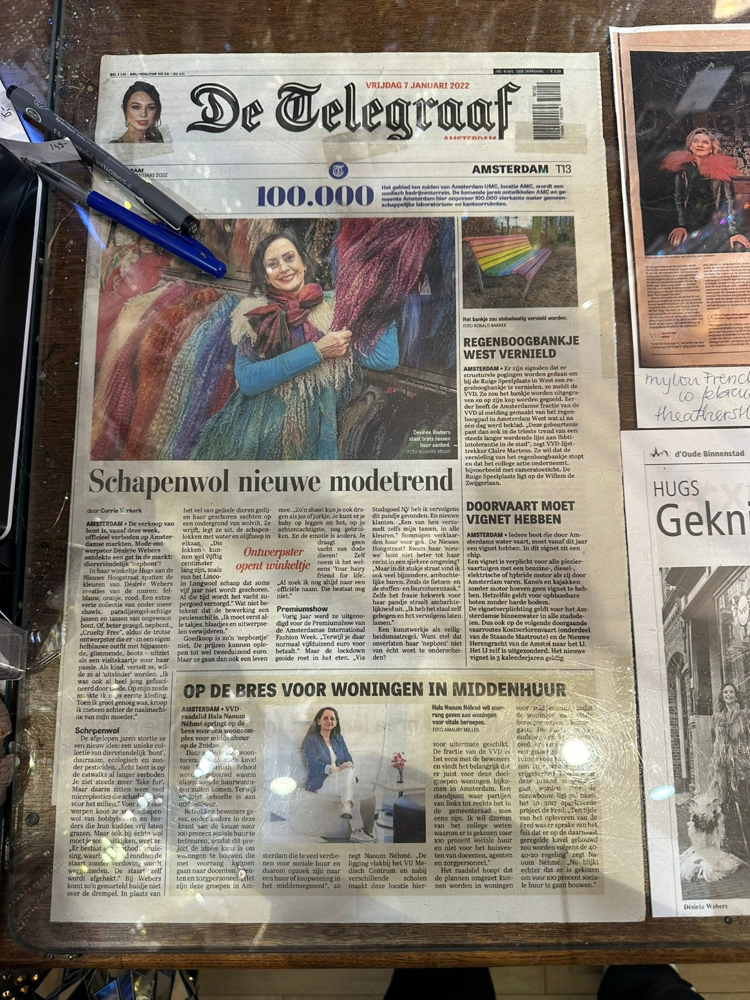

Hugs.amsterdam
is een winkel in Amsterdam, opgezet door ontwerper en winkeleigenaar Desiree. Deze unieke winkel biedt een groot assortiment aan alternatieve kleding en is zeer bekend in de punk scene. De eigenaresse hecht veel waarde aan het feit dat haar kleding aanvoelt als een knuffel, vol warmte en liefde gestopt in het maakproces van de stukken die ze verkoopt.
punkstijl
is niet het enigen wat mensen aantrekt naar deze winkel, maar ook mensen die houden van andere alternatieve kledingstijlen, zoals steampunk. De winkel biedt ook handgemaakte sjaals en schattige kettingen aan! wat Hugs zo bijzonder maakt? Bijna alle producten in de winkel zijn handgemaakt, niet alleen door Desiree zelf, maar ook door ontwerpers die zij zorgvuldig en met liefde uitkiest.
Vrijheid
Niets is te gek bij Hugs, van gekke brillen tot chique kettingen en flamboyante outfits.